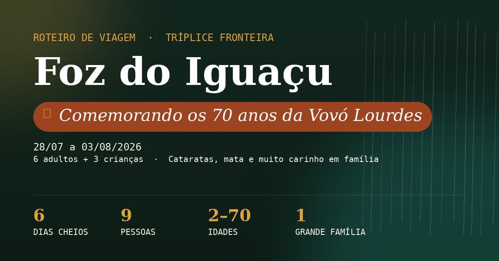

28/07 a 03/08/2026 — seis dias de cataratas, mata, aves e um pouco de agito, pensados para um grupo de três gerações se divertir no mesmo ritmo.
Pouso 9h20, primeira imersão no clima da tríplice fronteira e um pôr do sol para começar bem.
Ritmo leve/moderadoChegada ao aeroporto de Foz. Traslado até o Airbnb ↗ mapa (R. das Papoulas, 764), check-in e acomodação das malas — com o pouso pela manhã, sobra bastante dia útil.
Almoço tranquilo perto do Airbnb e uma horinha de descanso/piscina para as crianças soltarem a energia da viagem.
Templo Budista Chen Tien ↗ mapa — jardins, estátuas e vista panorâmica da cidade e de Ciudad del Este. Entrada gratuita, visita de ~1h, tirem os sapatos para entrar no templo.
Marco das Três Fronteiras ↗ mapa — mirante onde se vê Brasil, Argentina e Paraguai ao mesmo tempo. Passeio curto (30–40 min), acessível para carrinho de bebê, ótimo para o pôr do sol.
O grande dia do roteiro. O parque abre 9h (8h30 fim de semana) — chegar no primeiro horário evita calor, fila e multidão na Garganta do Diabo.
Ritmo moderado / animadoSaída do Airbnb.
Entrada no Parque Nacional do Iguaçu ↗ mapa.
Trilha das Cataratas — cerca de 1,2 km, plana e pavimentada, com ônibus panorâmico interno incluso no ingresso. Elevador disponível para quem tiver dificuldade de mobilidade. Ritmo tranquilo, parem quantas vezes quiserem.
Almoço dentro do próprio parque (ver abaixo) — evita deslocamento extra logo após a trilha.
Vale dos Dinossauros ↗ mapa (complexo Dreams Park Show) — trilha entre florestas e lagos com 30 dinossauros animatrônicos em tamanho real, som e movimento incluídos. Funciona até 22h, dá pra ir com calma no fim da tarde. Arvorismo e tirolesa são opcionais e à parte.
Trilhas planas e sombreadas de manhã, diversão à tarde — um dos combos mais queridos por criança e adulto.
Ritmo moderado / animadoSaída do Airbnb — o parque fica a poucos minutos das Cataratas.
Parque das Aves ↗ mapa: viveiros imersivos, Casa das Borboletas, área de répteis. Passeio de ritmo leve, com bancos e sombra ao longo do caminho.
Almoço leve (ver abaixo).
Wonder Park Foz ↗ mapa — parque de diversões com atrações como Movie Cars, Big Land e Show das Águas, além de área própria para os pequenos. Funciona até 22h, o grupo pode dosar o tempo conforme o ânimo de cada um.
Travessia num dia de semana, de propósito: em Ciudad del Este as lojas funcionam em horário cheio de segunda a sábado, sem a restrição do comércio de domingo.
Ritmo moderadoSaída do Airbnb rumo à Ponte da Amizade — travessia para Ciudad del Este (levem documento de todos, inclusive das crianças).
Compras em Ciudad del Este — com todo o comércio funcionando normalmente (lojas de rua, Shopping China ↗ mapa, Shopping Paris, Cellshop, Monalisa, Nissei), o grupo pode se dividir por interesse: eletrônicos, perfumaria, moda ou decoração, sem pressa de horário de fechamento.
Almoço em um dos shoppings — a praça de alimentação do Shopping China é ampla e prática para um grupo grande com crianças.
Retorno a Foz do Iguaçu, atravessando de volta a fronteira.
Fim de tarde livre no Airbnb para guardar as compras e descansar antes do dia mais longo do roteiro (Cataratas argentinas, amanhã).
Com um dia inteiro livre, vale a pena ver a outra metade das Cataratas: mais próxima da água, com trenzinho ecológico incluso e a Garganta do Diabo por uma passarela diferente.
Ritmo animado — dia mais longo do roteiroSaída cedo do Airbnb — travessia de fronteira até Puerto Iguazú (levem documento de todos, inclusive das crianças).
Entrada no Parque Nacional Iguazú ↗ mapa. Primeira parada: Trenzinho Ecológico da Selva até a Garganta do Diabo — as crianças costumam adorar o passeio de trem.
Garganta do Diabo — passarela até o mirante mais impressionante do parque. Chegar cedo evita as multidões do meio-dia.
Circuito Inferior — trilha mais tranquila, com vistas de baixo para as quedas, boa para o ritmo do grupo. Quem estiver mais cansado pode parar por aqui e não seguir para o Circuito Superior.
Almoço dentro do parque (La Selva ou área de praças de alimentação perto do Centro de Visitantes).
Para quem ainda tiver ânimo: Circuito Superior, com vista de cima das quedas. Os adultos mais dispostos também podem encarar o passeio de barco Gran Aventura (opcional, à parte, molha bastante — melhor sem as crianças pequenas).
Retorno a Foz do Iguaçu para uma noite tranquila — dia mais puxado do roteiro.
Último dia cheio, mas sem nada cansativo — encerra o roteiro com folga para arrumar as malas antes da madrugada de embarque.
Ritmo moderadoTour Panorâmico da Itaipu ↗ site — passeio de ônibus pela usina, sem caminhada longa, com paradas para fotos no mirante e na crista da barragem. Boa opção para todas as idades. Funciona normalmente aos domingos.
Almoço.
Refúgio Biológico Bela Vista ↗ mapa (Itaipu) — trilha curta e sombreada pela mata, com viveiros de animais silvestres resgatados (onças, araras, antas). Fica pertinho da usina, dá pra emendar direto após o tour. Aberto aos domingos (fecha só às terças, para manutenção).
Arrumação das malas com calma — deixem tudo pronto ainda de dia, para a noite ficar livre.
Jantar leve e cedo perto do Airbnb — o embarque é de madrugada, então vale priorizar o sono possível desta noite.
Sem atividades — este dia é só logística de viagem.
MadrugadaSaída do Airbnb rumo ao aeroporto, considerando check-in e tempo de antecedência para um voo às 5h.
Ficando em Airbnb, com 9 pessoas e crianças pequenas, a resposta é: vale a pena alugar carro.
Reservem com antecedência avisando o tamanho do grupo (9 pessoas) — em alta temporada, mesas grandes enchem rápido.
Buffet variado + churrasco + show folclórico.
Dentro do Parque Nacional, vista para o rio.
Leve, vegetariano/vegano, panquecas.
Massas frescas, ambiente temático.
Ampla e prática para grupo grande com crianças, em Ciudad del Este.
Direto no Parque Nacional Iguazú, evita deslocamento extra no dia mais longo.
Massas tradicionais variadas — última noite.
Árabe farta, preço acessível.
Culinária indiana, ambiente confortável.
Base do grupo: Airbnb na R. das Papoulas, 764, Foz do Iguaçu. Todos os pontos do roteiro abaixo, com endereço e telefone para ligar ou confirmar horário antes de ir.
Mapa centrado no Airbnb ↗ mapa (R. das Papoulas, 764) — use os links "ver no mapa" nas tabelas abaixo para abrir cada ponto específico no Google Maps.
| Nome | Endereço | Telefone | Mapa |
|---|---|---|---|
| Airbnb (base do grupo) | R. das Papoulas, 764 — Bourbon, Foz do Iguaçu | — | Ver no mapa → |
| Templo Budista Chen Tien | R. Dr. Josivalter Vilanova, 99 — Porto Belo, Foz do Iguaçu | +55 45 3524-5566 | Ver no mapa → |
| Marco das Três Fronteiras | Ac. Três Fronteiras, Foz do Iguaçu | +55 45 3132-4104 | Ver no mapa → |
| Parque Nacional do Iguaçu (BR) | Av. das Cataratas, km 22 — Foz do Iguaçu | +55 45 3521-4400 | Ver no mapa → |
| Vale dos Dinossauros | Av. das Cataratas, 8100 — Foz do Iguaçu | +55 45 3527-8100 | Ver no mapa → |
| Parque das Aves | Av. das Cataratas, 12450 (km 17,1) — Foz do Iguaçu | +55 45 3529-8282 | Ver no mapa → |
| Wonder Park Foz | Av. das Cataratas, 11547 — Foz do Iguaçu | +55 45 3132-5416 | Ver no mapa → |
| Shopping China Importados | Av. Luis Maria Argaña, Ciudad del Este, Paraguai | +595 981 701701 | Ver no mapa → |
| Parque Nacional Iguazú (AR) | Ruta 101, Km 142 — Puerto Iguazú, Argentina | +54 9 3757 67-4714 | Ver no mapa → |
| Itaipu Binacional (Panorâmica) | Av. Tancredo Neves, 6702 — Foz do Iguaçu | 0800 600 8088 | Site oficial → |
| Refúgio Biológico Bela Vista | Av. Tancredo Neves, 6702-07 — Foz do Iguaçu | +55 45 3198-1800 | Ver no mapa → |
| Nome | Endereço | Telefone | Mapa |
|---|---|---|---|
| Rafain Churrascaria Show | Av. das Cataratas, 1749 — Foz do Iguaçu | +55 45 3523-1177 | Ver no mapa → |
| Restaurante Porto Canoas | BR-469, km 30 — dentro do Parque Nacional | +55 45 3521-4443 | Ver no mapa → |
| Empório com Arte | Av. das Cataratas, 569 — Foz do Iguaçu | +55 45 3572-4240 | Ver no mapa → |
| La Mafia Trattoria | R. Watslaf Nieradka, 195 — Centro, Foz do Iguaçu | +55 45 98418-1194 | Ver no mapa → |
| Quinta da Oliva | R. Estanislau Zambrzycki, 197 — Centro, Foz do Iguaçu | +55 45 3572-3131 | Ver no mapa → |
| Castelo Libanês | R. Vinícius de Moraes, 520 — Monjolo, Foz do Iguaçu | +55 45 99981-8051 | Ver no mapa → |
| Indian Lounge | R. Belarmino de Mendonça, 1165 — Centro, Foz do Iguaçu | +55 45 3025-7171 | Ver no mapa → |
| La Selva (Parque Nac. Iguazú, AR) | Dentro do parque argentino, Puerto Iguazú | — | Ver no mapa → |